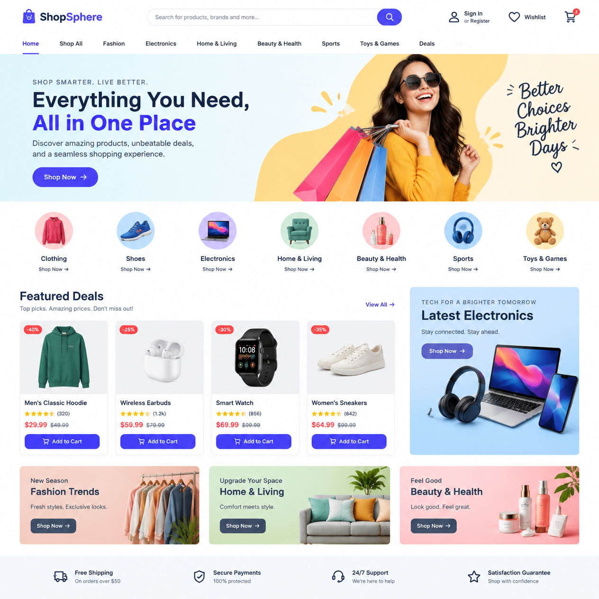
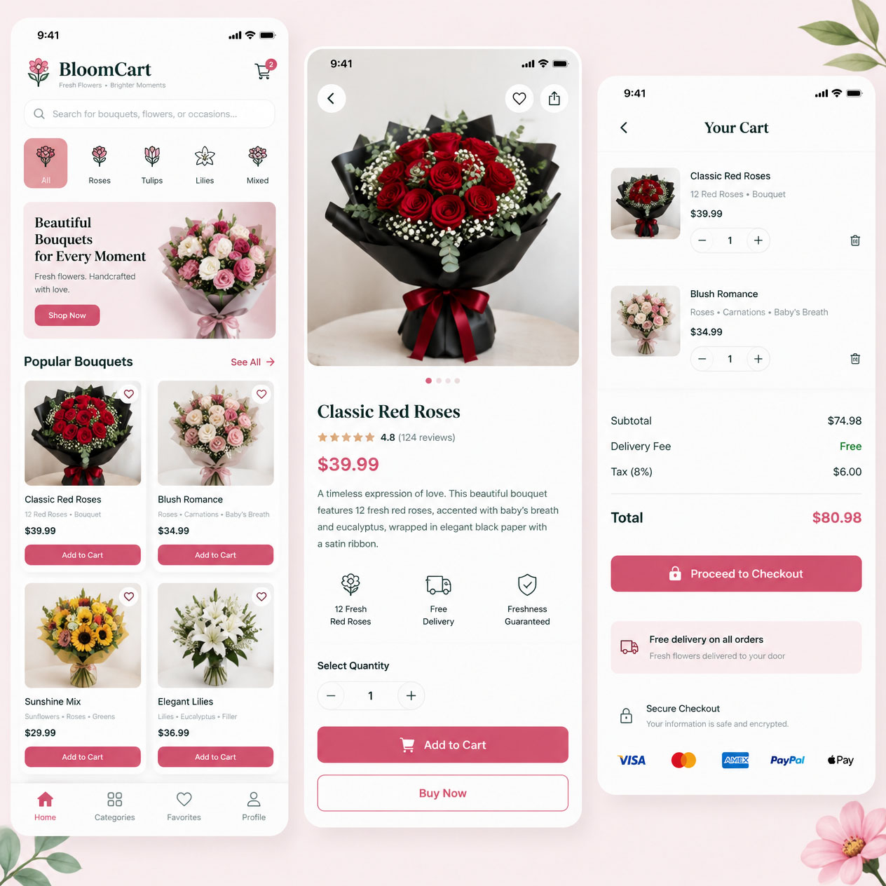
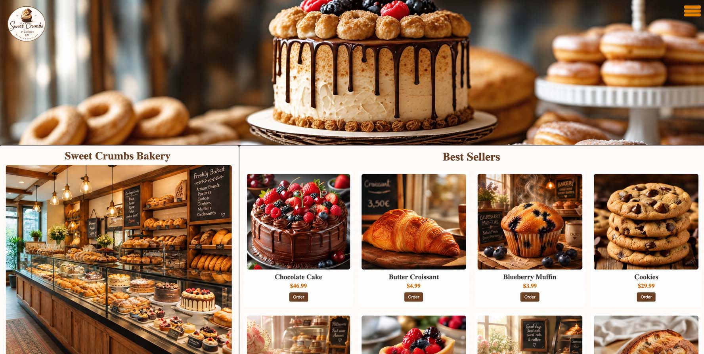
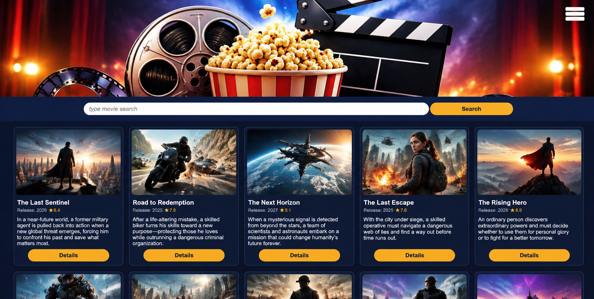

HELLO, WELCOME TO MY PORTFOLIO
Hi, I'm Deepika Sharma
QA Engineer | Aspiring Web & AI Developer
I am passionate about software quality, technology and creating meaningful digital experiences.With over 6 years of QA experience, I enjoy learning new technologies and turning ideas into practical solutions.
Explore My WorkGET TO KNOW ME
About Me
My Professional Journey
I am a Quality Assurance professional with over 8 years of experience in software testing. I have worked with Agile and Scrum teams, reviewed user stories and acceptance criteria, and delivered quality software.
My experience includes e-commerce, live sports score applications and banking applications.
What Drives Me
Continuous Learning
Quality and Innovation
Problem Solving
Personal Growth
MY EXPERTISE
Technical Skills
Quality Assurance
Manual Testing, Functional Testing,Regression Testing
Tools & Methodologies
Jira, Agile & Scrum,Acceptance Criteria
Web Development
HTML5, CSS3, JavaScript,CSS Grid
Design & Development Tools
VS Code, Git & GitHub, Figma
MY BACKGROUND
Professional Experience
Quality Assurance Professional
8+ Years of Experience
Experienced in software quality assurance,test planning, reviewing requirements,identifying defects and collaborating with cross-functional teams.
8+
Years Experience
11+
Projects Completed
100%
Dedication
∞
Always Learning

MY RECENT WORK
Projects & Learning
Exploring quality assurance, web development and creative design.
QA & Software Testing

E-commerce Testing
Testing product listings, shopping carts and checkout functionality.
Executed end-to-end functional and usability testing across key e-commerce user journeys, including product catalog filtering, search accuracy, shopping cart management, and multi-step checkout workflows. Validated pricing calculations, discount code logic, inventory updates, and payment gateway integrations to ensure a smooth and error-free shopping experience. Logged and tracked UI and functional defects across multiple browsers and devices to verify responsive performance before launch.

Live Sports Application
Validating live scores, match updates and application functionality.
Performed real-time functional and performance testing on a live sports application, validating instant score updates, match timelines, player statistics, and live event notifications. Tested data synchronization under high-traffic match conditions to ensure accurate score feeds, minimal latency, and reliable push alerts across mobile and web platforms. Identified and resolved UI layout issues and feed-delay defects to deliver a seamless live-viewing experience for users.
Banking Application
Testing banking application features and transaction workflows.
Conducted comprehensive end-to-end quality assurance testing on core banking features and critical transaction workflows. Designed and executed detailed test cases covering account management, fund transfers, balance validations, and security authentication to ensure high data accuracy and regulatory compliance.
Web Development

Bloom & Petalss
A floral shop website project designed to help users explore arrangements, choose a custom flower bouquet, and schedule special deliveries in one place.
Built and customized a multi-page WordPress floral storefront featuring a structured navigation menu, service showcases, customer testimonials, and an interactive Contact Us inquiry form.

Sweet Crumbs Bakery
A bakery website developed with interactive features and a user-friendly design.
Designed and developed a responsive bakery website featuring an interactive product menu, custom order inquiry forms, and a warm, user-friendly layout. Built smooth navigation, visual gallery showcases, and dynamic cart or flavor-selection elements to enhance the customer browsing experience across desktop and mobile devices. Focused on clean typography, fast load times, and intuitive calls to action to make exploring items and placing orders effortless.

MovieNest Website
A dynamic movie discovery website featuring real-time film details, actor profiles, full cast credits, and official trailers powered by the TMDB API.
UI/UX & Graphic Design

Nova Photography — Web Design & Concept Project
Nova Photography is a full-scale web application concept created to explore modern design aesthetics and seamless user experience. Built with a focus on clean layouts, bold visual hierarchy, and intuitive navigation, the project showcases a complete multi-page digital presence. It features dedicated screens for the Home, About, Portfolio, Services & Packages, and Booking pages, demonstrating how striking photography and functional interface design work together to guide visitors smoothly from inspiration to inquiry.

Skincare Beauty Glow
A skincare and beauty promotional mockup design serves as a realistic visual showcase for packaging, branding, and marketing materials before physical production begins. By placing custom labels, logos, and color palettes onto photorealistic bottles, jars, and tubes, brands can preview their aesthetic across digital ads, social media campaigns, and e-commerce storefronts.

Music Live Show
A creative promotional design for a live music event.